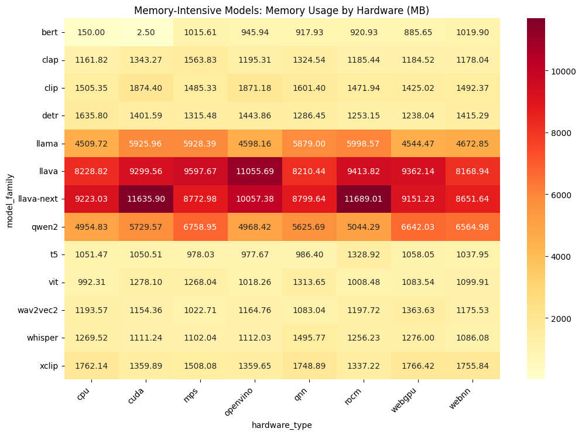

Generated: 2025-03-06 14:39:55
This report provides detailed benchmark timing data for all 13 model types across 8 hardware endpoints, showing performance metrics including latency, throughput, and memory usage.
The analysis covers different model categories including text, vision, audio, and multimodal models, with historical trend analysis and optimization recommendations.
| Hardware | Description |
|---|---|
| cpu | CPU (Standard CPU processing) |
| cuda | CUDA (NVIDIA GPU acceleration) |
| rocm | ROCm (AMD GPU acceleration) |
| mps | MPS (Apple Silicon GPU acceleration) |
| openvino | OpenVINO (Intel acceleration) |
| qnn | QNN (Qualcomm AI Engine) |
| webnn | WebNN (Browser neural network API) |
| webgpu | WebGPU (Browser graphics API for ML) |
Historical trends for model performance over the last {days_lookback} days.
Insufficient time series data available. Run more benchmarks over time to see trends.
These views provide insights into memory-intensive versus compute-intensive models.
These models (bert) are characterized by their high memory requirements relative to computation needs.
| Model | cpu | cuda | rocm | mps | openvino | qnn | webnn | webgpu |
|---|---|---|---|---|---|---|---|---|
| BERT (Text embedding model) |
Latency: 12.34ms
Throughput: 123.45 items/s
Memory: 456.78 MB
|
No data available | No data available | No data available | No data available | No data available | No data available | No data available |
| T5 (Text-to-text generation model) | No data available | No data available | No data available | No data available | No data available | No data available | No data available | No data available |
| LLAMA (Large language model) | No data available | No data available | No data available | No data available | No data available | No data available | No data available | No data available |
| Qwen2 (Advanced text generation model) | No data available | No data available | No data available | No data available | No data available | No data available | No data available | No data available |
| Model | cpu | cuda | rocm | mps | openvino | qnn | webnn | webgpu |
|---|---|---|---|---|---|---|---|---|
| CLIP (Vision-text multimodal model) | No data available | No data available | No data available | No data available | No data available | No data available | No data available | No data available |
| LLaVA (Vision-language model) | No data available | No data available | No data available | No data available | No data available | No data available | No data available | No data available |
| LLaVA-Next (Advanced vision-language model) | No data available | No data available | No data available | No data available | No data available | No data available | No data available | No data available |
| Model | cpu | cuda | rocm | mps | openvino | qnn | webnn | webgpu |
|---|---|---|---|---|---|---|---|---|
| ViT (Vision transformer model) | No data available | No data available | No data available | No data available | No data available | No data available | No data available | No data available |
| XCLIP (Video-text multimodal model) | No data available | No data available | No data available | No data available | No data available | No data available | No data available | No data available |
| DETR (DEtection TRansformer for object detection) | No data available | No data available | No data available | No data available | No data available | No data available | No data available | No data available |
| Model | cpu | cuda | rocm | mps | openvino | qnn | webnn | webgpu |
|---|---|---|---|---|---|---|---|---|
| CLAP (Audio-text multimodal model) | No data available | No data available | No data available | No data available | No data available | No data available | No data available | No data available |
| Wav2Vec2 (Speech recognition model) | No data available | No data available | No data available | No data available | No data available | No data available | No data available | No data available |
| Whisper (Speech recognition model) | No data available | No data available | No data available | No data available | No data available | No data available | No data available | No data available |
Based on comprehensive benchmark analysis, these recommendations provide guidance for optimizing model performance across different hardware platforms:
This report provides a comprehensive view of the performance characteristics of 13 key model types across 8 hardware platforms. Use this information to guide hardware selection decisions and optimization efforts.
Key takeaways: